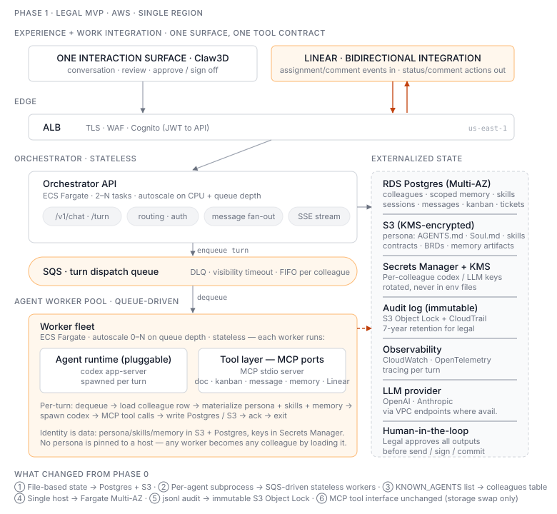
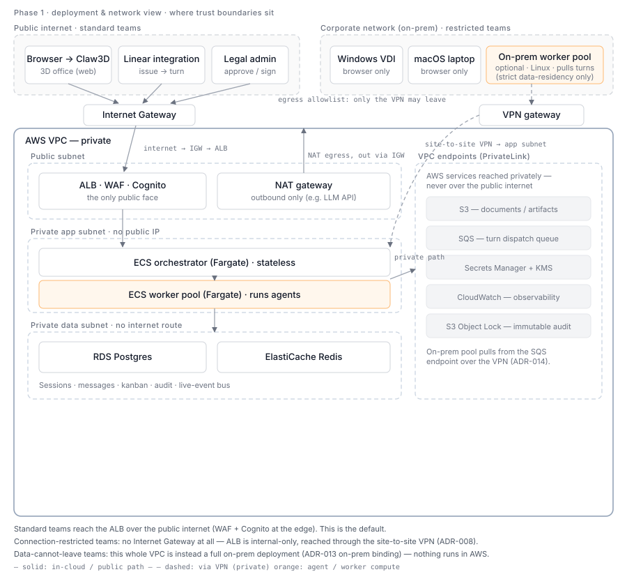

Phase 1 — Legal MVP
Status: 🚧 In design. Target ship: ~2 months from repo creation.
Scope: One scenario only — legal contract review. One interaction surface — Claw3D. One bidirectional work integration — Linear. One team — legal. Multi-colleague but small (3–5 personas).
This phase is the AWS binding of the logical architecture. The AWS services below (RDS, S3, SQS, Fargate, …) are implementations of capability components (Persona store, Dispatch queue, Worker pool, …); the same capabilities can bind on-prem — see ADR-013.
Goal
Ship a production-ready system that the legal team can rely on for daily contract review work. Production-ready means: hosted on AWS, no SPOF on the worker layer, auditable, recoverable, and able to be operated without the original developer present.
Non-goals for Phase 1 (deferred to later phases)
- Multi-team / multi-tenant — single team workspace is fine
- Integrations beyond Linear — no Slack/Teams/Email tools yet
- 1000-agent scale — design for ~20 concurrent colleague turns
- Multi-region / DR — single AWS region, accept ~1hr RTO
Architecture (sketch — to be diagrammed)
- Orchestrator API (ECS Fargate, autoscaled) — replaces
server.py, stateless - Worker pool (ECS Fargate, queue-driven) — replaces per-agent subprocesses
- SQS for turn dispatch — direct port of Phase 0
pending.jsonlsemantics - RDS Postgres for sessions, audit, kanban, message log
- S3 for documents (contracts) and large artifacts
- Secrets Manager + KMS for per-colleague codex/LLM credentials
- Linear integration as a bidirectional tool (issue event → turn; status/comment actions → Linear)
- CloudTrail + immutable audit log for legal compliance story

This is the component / flow view — what the pieces are and how a turn moves between them.
Deployment & network view
The component view above deliberately says nothing about network trust boundaries. That's a separate concern, so it's a separate diagram — where things sit relative to the public internet, the VPC, its subnets, and the corporate network.

Three network situations, same components:
- Standard teams (default) — reach the ALB over the public internet through an Internet Gateway; WAF + Cognito at the edge. The orchestrator/workers live in private subnets with no public IP; their outbound traffic (e.g. an LLM API) leaves via a NAT gateway, which itself egresses through the Internet Gateway. Data stores have no internet route; AWS services (SQS, S3, Secrets) are reached through PrivateLink VPC endpoints, not the public internet. (IGW = the door to the internet; NAT = outbound-only for private subnets; VPC endpoint = reach AWS services with no internet at all.)
- Connection-restricted teams — the data may transit encrypted, but nothing should cross the public internet. The ALB becomes internal-only and is reached through a site-to-site VPN; desktops (Windows VDI / macOS) are browser-only, so the OS doesn't matter (ADR-008). This is the meaning of "private VPC + VPC endpoints + site-to-site VPN + egress allowlist."
- Data-cannot-leave teams — the strictest case. The whole VPC is instead a full on-prem deployment (ADR-013 on-prem binding); an on-prem Linux worker pool pulls turns over the VPN (ADR-014). Nothing runs in AWS.
Which situation applies is a question for IT/legal, not an architecture choice — see ADR-008. "Network-private" (situations 1–2) and "physically not in the cloud" (situation 3) are different requirements; don't conflate them.
Key design decisions (ADRs)
- ADR-002: Fargate vs EKS — why we're not doing Kubernetes yet
- ADR-003: Linear as control plane for task dispatch
- ADR-004: Worker pool with externalized state vs per-agent containers
- ADR-005: Human-in-the-loop gates for contract output
- ADR-006: Audit log storage and retention for legal compliance
- ADR-007: Symphony-inspired claim-state machine, workflow-as-data colleague config, and bounded continuation turns — informs ADR-004
- ADR-011: ALB + orchestrator as the gateway, not API Gateway
- ADR-012: worker → orchestrator streaming return path (Redis Pub/Sub)
- ADR-019: one interaction surface; Linear and future services are bidirectional tools
Migration from Phase 0
workspace/messages/messages.jsonl→ Postgresmessagestableworkspace/kanban/kanban.json→ Postgreskanban_cardstableworkspace/docs/→ S3 bucket (with KMS encryption), as the default document integration for content we originate — if a team's contracts actually live in SharePoint,doc_*tools resolve through a SharePoint tool instead; see ADR-019runtime/pending/pending.jsonl→ SQS queue + Postgrespending_ticketstableKNOWN_AGENTSlist →colleaguestable
Colleague identity (the personalization state — where it lives)
This is the part that makes a colleague that colleague, and it must survive the move off the local filesystem. It maps to the Colleague Identity Plane in the logical architecture; here is its concrete Phase 1 (AWS) binding:
agents/<id>/cwd/AGENTS.md,Soul.md(persona — role, voice, rules) → S3 (versioned persona files), referenced from thecolleaguesrowagents/<id>/.codex/skills(skills) → S3 (skill bundles) + Postgres (per-colleague skill registry: which colleague has which skills)agents/<id>/memory/(memory) → Postgres (structured, scoped: session / colleague / team) + S3 (large memory artifacts)agents/<id>/.codex/*.sqlite, auth (credentials) → Secrets Manager + KMS (keys) + Postgres (config)
A worker is stateless: at turn start it materializes the colleague's persona + skills + memory into its per-turn workspace, then spawns codex. No persona is pinned to a host — any worker becomes any colleague by loading it. This is what makes "identity is data, not a deployment" concrete.
The MCP tool layer (doc_*, kanban_*, memory_*, etc.) keeps its interface — only the
backing storage changes. This means the codex agent prompts don't need to change.